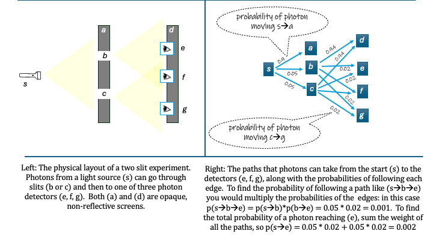

The Two Slit Experiment
Wave-particle duality and the two-slit experiment
Let's start with the whole wave-particle duality and the famous two slit experiment. This is actually one of the few parts of QM that does have a precise mathematically accessibly description, thanks to Fenymann, which I will mostly follow here. The main difference between this description and Fenymann's is use of more modern notation, and drawing analogies to ML when I can.
Wave-particle duality is definitely one of the things in QM that inspires difficult-to-understand prose, e.g;
Wave–particle duality is the concept in quantum mechanics that fundamental entities of the universe, like photons and electrons, exhibit particle or wave properties according to the experimental circumstances. It expresses the inability of the classical concepts such as particle or wave to fully describe the behavior of quantum objects. During the 19th and early 20th centuries, light was found to behave as a wave, then later was discovered to have a particle-like behavior, whereas electrons behaved like particles in early experiments, then later were discovered to have wave-like behavior. The concept of duality arose to name these seeming contradictions.The two-slit experiment is a simple illustration of wave-particle duality. We will start out by walking though the particle-based analysis of the two-slit experiment.
Light as particles
The two-slit experiment is shown on the left in the figure below. There is a light source \( s \) pointed at some sort of black screen \( a \), which has two narrow slits in it, \( b \) and \( c \). Behind screen \( a \) is another screen \( d \), on which are mounted three light detectors \(e, f, g \).

If light acted like a bunch of particles, we could analyze this by looking at what any individual light particle (photon) would do. That analysis is on the right side of the figure. Briefly, the photon goes from \( s \) to either the screen \(a \), where it will stop, or into one of the slits \( b, c \). From either slit it will travel to either the second screen \( d \), or one of the detectors \( e, f, g \).
Coming from ML it seems natural to model this probabilistically, so there is some probability for each step in the path the photon takes. Jump ahead if you'd like! but if you'd like the long story, in ML we'd use the notation \( p( b | s ) \) for the probability of the photon traveling from \( s \) to \( b \), and so on.
The figure puts in some concrete numbers for these. Let's assume there is a 90% chance of hitting the screen \( a \) and 5% chance of hitting each slit. and then a 2% chance of getting from any slit to any of the three detectors, leaving to 94% chance of hitting the second screen \( d \). (No, I didn't bother to write all the numbers but you get the idea, and yes, in a real experiment we'd have to work out from observation what the numbers would be, and they probably would not be equal.).
Putting it all together it's easy to see what fraction of photons would hit each detector. To go from \( s \) to \(e\), for example, the photon has to go through either \( b \) or \(c \). The chance of going from \( s \) to \( e \) via \(b \) is found by just multiplying the probabilities along that path: $$ p(e | s \mbox{~via \( b \)}) = p( b | s ) p ( e | b) $$ and the overall chance a photo hitting \( e \), via either of the possible paths, is found by summing the probabilities of the two paths: $$ p(e | s) = p( b | s ) p ( e | b) + p( c | s ) p ( e | c) $$ The equations for the other detectors are similar. So: if we know how many photons are produced by the light source, we can easily predict how many will hit the detector. These probabilities are all we need for the model.
These probability computations are repetitive, but very easy to write down in matrix notation, which is widely used in ML.
In matrix notation, we have this model for the probability of a particle leaving the light source and hitting any of the three detectors: $$ \textbf{v} = \left[ p(a|s), ~ p(b|s), ~ p(c|s) \right], ~~~~ \textbf{M} = \left[ \begin{array}{rrr} p(d|a) & p(d|b) & p(d|c) \\ p(e|a) & p(e|b) & p(e|c) \\ p(f|a) & p(f|b) & p(f|c) \\ \end{array} \right], ~~~ \textbf{D} = \textbf{v} \textbf{M} $$
We could also simplify \( \textbf{M} \) by plugging in the probabilities we know will be zero, since photons are assumed to be absorbed by \( a \). $$ \textbf{M} = \left[ \begin{array}{rrr} 0 & p(d|b) & p(d|c) \\ 0 & p(e|b) & p(e|c) \\ 0 & p(f|b) & p(f|c) \\ \end{array} \right] $$